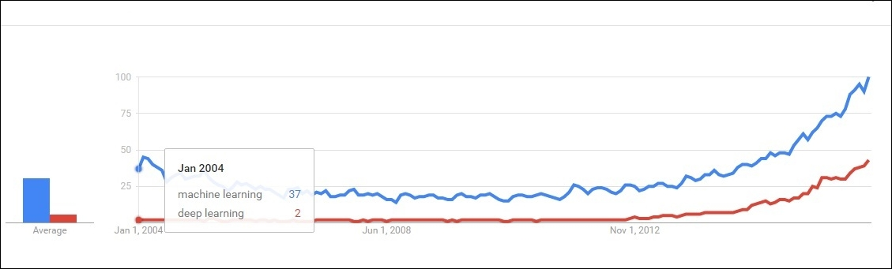
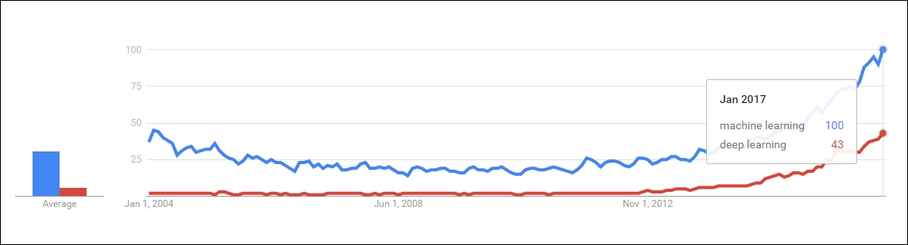
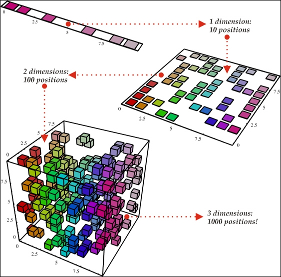
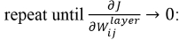
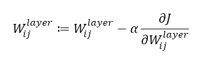
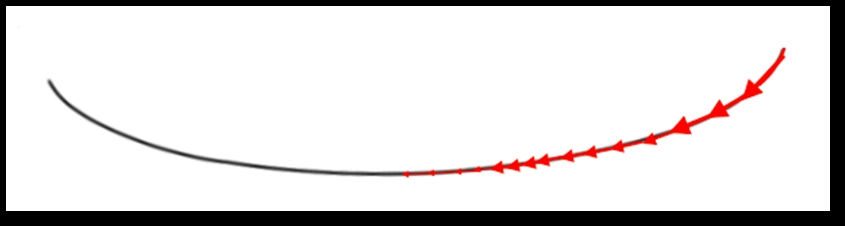
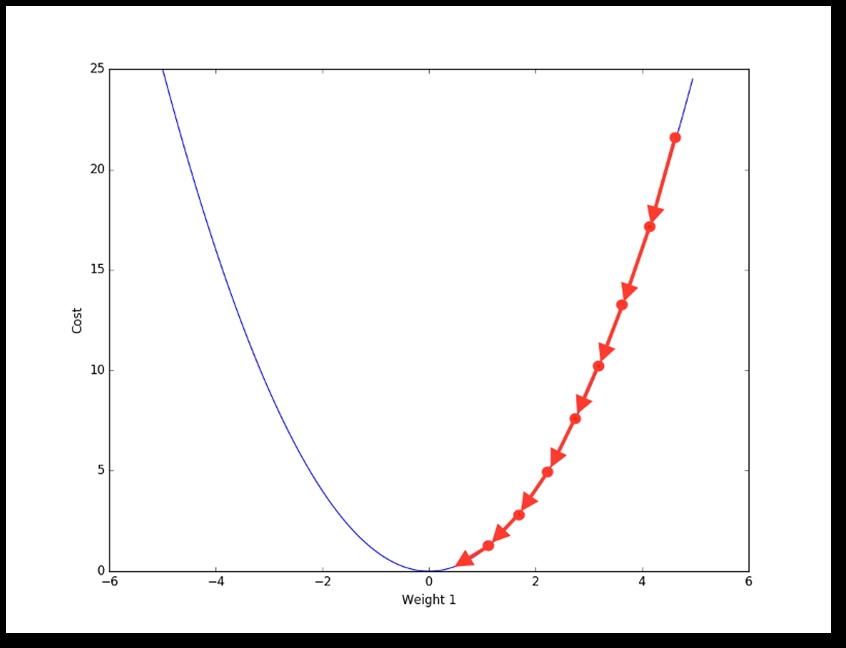
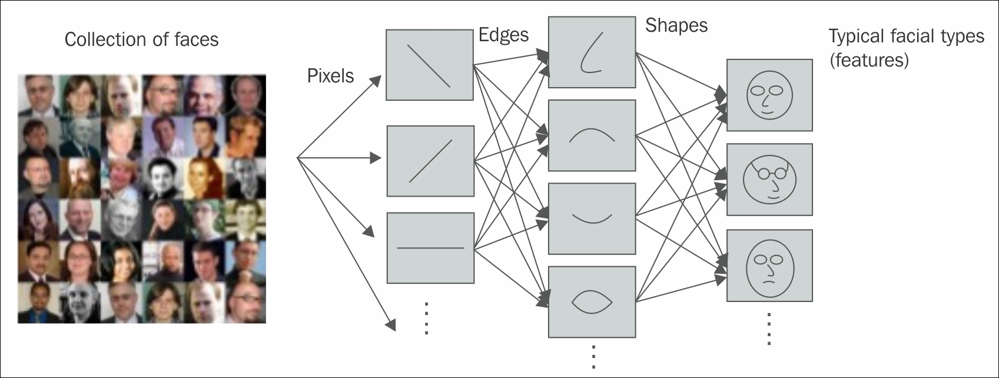

An extensive history of deep learning is beyond the scope of this book. However, to get an interest in and cognizance of this subject, some basic context of the background is essential.
In the introduction, we already talked a little about how deep learning occupies a space in the perimeter of Artificial Intelligence. This section will detail more on how machine learning and deep learning are correlated or different from each other. We will also discuss how the trend has varied for these two topics in the last decade or so.
"Deep Learning waves have lapped at the shores of computational linguistics for several years now, but 2015 seems like the year when the full force of the tsunami hit the major Natural Language Processing (NLP) conferences." | ||
| --Dr. Christopher D. Manning, Dec 2015 | ||

Figure 1.9: Figure depicts that deep learning was in the initial phase approximately 10 years back. However, machine learning was somewhat a trending topic in the researcher's community.
Deep learning is rapidly expanding its territory in the field of Artificial Intelligence, and continuously surprising many researchers with its astonishing empirical results. Machine learning and deep learning both represent two different schools of thought. Machine learning can be treated as the most fundamental approach for AI, where as deep learning can be considered as the new, giant era, with some added functionalities of the subject.

Figure 1.10: Figure depicts how deep learning is gaining in popularity these days, and trying to reach the level of machine learning
However, machine learning has often failed in completely solving many crucial problems of AI, mainly speech recognition, object recognition, and so on.
The performance of traditional algorithms seems to be more challenging while working with high-dimensional data, as the number of random variables keeps on increasing. Moreover, the procedures used to attain the generalization in traditional machine-learning approaches are not sufficient to learn complicated obligations in high-dimensional spaces, which generally impel more computational costs of the overall model. The development of deep learning was mostly motivated by the collapse of the fundamental algorithms of machine learning on such functions, and also to overcome the afore mentioned obstacles.
A large proportion of researchers and data scientists believe that, in the course of time, deep learning will occupy a major portion of Artificial Intelligence, and eventually make machine learning algorithms obsolete. To get a clear idea of this, we looked at the current Google trend of these two fields and came to the following conclusion:
Both of the preceding Figure 1.9 and Figure 1.10 depict the visualizations of the Google trend.
One of the biggest-known problems that machine learning algorithms face is the curse of dimensionality [12] [13] [14]. This refers to the fact that certain learning algorithms may behave poorly when the number of dimensions in the dataset is high. In the next section, we will discuss how deep learning has given sufficient hope to this problem by introducing new features. There are many other related issues where deep architecture has shown a significant edge over traditional architectures. In this part of the chapter, we would like to introduce the more pronounced challenges as a separate topic.
The curse of dimensionality can be defined as the phenomena which arises during the analysis and organization of data in high-dimensional spaces (in the range of thousands or even higher dimensions). Machine learning problems face extreme difficulties when the number of dimensions in the dataset is high. High dimensional data are difficult to work with because of the following reasons:
A straightforward explanation for the curse of dimensionality could be combinatorial explosion. As per combinatorial explosion, with the collection of a number of variables, an enormous combination could be built. For example, with n binary variables, the number of possible combinations would be O (2n). So, in high-dimensional spaces, the total number of configurations is going to be almost uncountable, much larger than our number of examples available - most of the configurations will not have such training examples associated with them. Figure 1.11 shows a pictorial representation of a similar phenomenon for better understanding.
Therefore, this situation is cumbersome for any machine learning model, due to the difficulty in the training. Hughes effect [15] states the following:
"With a fixed number of training samples, the predictive power reduces as the dimensionality increases."
Hence, the achievable precision of the model almost collapses as the number of explanatory variables increases.
To cope with this scenario, we need to increase the size of the sample dataset fed to the system to such an extent that it can compete with the scenario. However, as the complexity of data also increases, the number of dimensions almost reaches one thousand. For such cases, even a dataset with hundreds of millions of images will not be sufficient.
Deep learning, with its deeper network configuration, shows some success in partially solving this problem. This contribution is mostly attributed to the following reasons:
Although deep learning networks have given some insights to deal with the curse of dimensionality, they are not yet able to completely conquer the challenge. In Microsoft's recent research on super deep neural networks, they have come up with 150 layers; as a result, the parameter space has grown even bigger. The team has explored the research with even deep networks almost reaching to 1000 layers; however, the result was not up to the mark due to overfitting of the model!
Over-fitting in machine learning: The phenomenon when a model is over-trained to such an extent that it gives a negative impact to its performance is termed as over-fitting of the model. This situation occurs when the model learns the random fluctuations and unwanted noise of the training datasets. The consequences of these phenomena are unsatisfactory--the model is not able to behave well with the new dataset, which negatively impacts the model's ability to generalize.
Under-fitting in machine learning: This refers to a situation when the model is neither able to perform with the current dataset nor with the new dataset. This type of model is not suitable, and shows poor performance with the dataset.

Figure 1.11: Figure shows that with the increase in the number of dimensions from one to three, from top to bottom, the number of random variables might increase exponentially. Image reproduced with permission from Nicolas Chapados from his article DataMining Algorithms for Actuarial Ratemaking.
In the 1D example (top) of the preceding figure, as there are only 10 regions of interest, it should not be a tough task for the learning algorithm to generalize correctly. However, with the higher dimension 3D example (bottom), the model needs to keep track of all the 10*10*10=1000 regions of interest, which is much more cumbersome (or almost going to be an impossible task for the model). This can be used as the simplest example of the curse of dimensionality.
The vanishing gradient problem [16] is the obstacle found while training the Artificial neural networks, which is associated with some gradient-based method, such as Backpropagation. Ideally, this difficulty makes learning and training the previous layers really hard. The situation becomes worse when the number of layers of a deep neural network increases aggressively.
The gradient descent algorithms particularly update the weights by the negative of the gradient multiplied by small scaler value (lies between 0 and 1).


As shown in the preceding equations, we will repeat the gradient until it reaches zero. Ideally, though, we generally set some hyper-parameter for the maximum number of iterations. If the number of iterations is too high, the duration of the training will also be longer. On the other hand, if the number of iterations becomes imperceptible for some deep neural network, we will surely end up with inaccurate results.
In the vanishing gradient problem, the gradients of the network's output, with respect to the parameters of the previous layers, become extremely small. As a result, the resultant weight will not show any significant change with each iteration. Therefore, even a large change in the value of parameters for the earlier layers does not have a significant effect on the overall output. As a result of this problem, the training of the deep neural networks becomes infeasible, and the prediction of the model becomes unsatisfactory. This phenomenon is known as the vanishing gradient problem. This will result in some elongated cost function, as shown in next Figure 1.12:

Figure 1.12: Image of a flat gradient and an elongated cost function
An example with large gradient is also shown in the following Figure 1.13, where the gradient descent can converge quickly:

Figure 1.13: Image of a larger gradient cost function; hence the gradient descent can converge much more quickly
This is a substantial challenge in the success of deep learning, but now, thanks to various different techniques, this problem has been overcome to some extent. Long short-term memory (LSTM) network was one of the major breakthroughs which nullified this problem in 1997. A detailed description is given in Chapter 4, Recurrent Neural Network. Also, some researchers have tried to resolve the problem with different techniques, with feature preparation, activation functions, and so on.
All the deep networks are mostly based on the concept of distributed representations, which is the heart of theoretical advantage behind the success of deep learning algorithms. In the context of deep learning, distributed representations are multiscale representations, and are closely related to multiscale modelling of theoretical chemistry and physics. The basic idea behind a distributed representation is that the perceived feature is the result of multiple factors, which work as a combination to produce the desired results. A daily life example could be the human brain, which uses distributed representation for disguising the objects in the surroundings.
An Artificial neural network, in this kind of representation, will be built in such a way that it will have numerous features and layers required to represent our necessary model. The model will describe the data, such as speech, video, or image, with multiple interdependent layers, where each of the layers will be responsible for describing the data at a different level of scale. In this way, the representation will be distributed across many layers, involving many scales. Hence, this kind of representation is termed as distributed representation.
The traditional clustering algorithms that use non-distributed representation, such as nearest-neighbor algorithms, decision trees, or Gaussian mixtures, all require O(N) parameters to distinguish O(N) input regions. At one point of time, one could hardly have believed that any other algorithm could behave better than this! However, the deep networks, such as sparse coding, RBM, multi-layer neural networks, and so on, can all distinguish as many as O(2k) number of input regions with only O(N) parameters (where k represents the total number of non-zero elements in sparse representation, and k=N for other non-sparse RBMs and dense representations).
In these kinds of operations, either same clustering is applied on different parts of the input, or several clustering takes place in parallel. The generalization of clustering to distributed representations is termed as multi-clustering.
The exponential advantage of using distributed representation is due to the reuse of each parameter in multiple examples, which are not necessarily near to each other. For example, Restricted Boltzmann machine could be an appropriate example in this case. However, with local generalization, non-identical regions in the input space are only concerned with their own private set of parameters.
The key advantages are as follows:
The following Figure 1.14 represents a real-time example of distributed representations:

Figure 1.14: Figure shows how distributed representation helped the model to distinguish among various types of expressions in the images